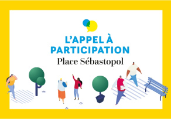
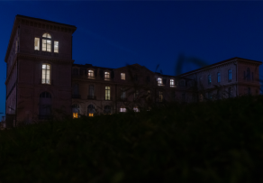
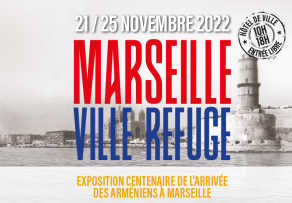
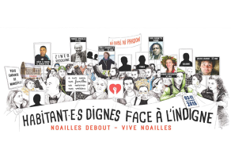
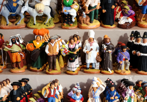
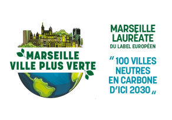
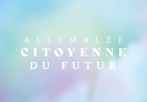
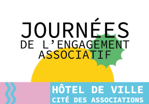
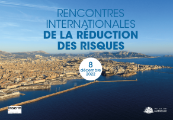

Marseille

Actualité

Projet de réaménagement de la place Sébastopol : participez à la consultation citoyenne !

La Ville de Marseille présente son plan d'efficacité et de sobriété énergétique

"Marseille ville refuge" : l'exposition centenaire de l'arrivée des Arméniens à Marseille !

Projet "Rue du Musée / Musée de la Rue" : "Place à prendre, acte II" au musée d'Histoire de Marseille

Projet "Rue du Musée / Musée de la Rue" : "Place à prendre, acte II" au musée d'Histoire de Marseille

Sommet "Emerging Valley" : un axe connecté entre l'Europe et l'Afrique

La Ville de Marseille lance en novembre son Assemblée Citoyenne du Futur

La Ville de Marseille soutient le monde associatif

Rencontres internationales de la réduction des risques : Marseille agit, Marseille s’engage